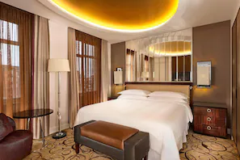
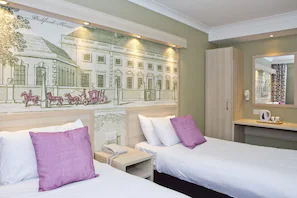
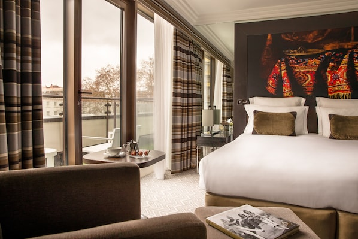

London Stay
| Image |
Hotel Name |
Price |
Facilities |
|---|
|
The Strand Palace Hotel |
$522 |
In the entertainment district, The Strand Palace Hotel is in London City Centre, a neighbourhood in London with great airport proximity. Buckingham Palace and London Dungeon are cultural highlights, and some of the area's notable landmarks include Covent Garden Market and Big Ben. Looking to enjoy an event or a match while in town? See what's going on at O2 Arena. Guests love the hotel's convenience for public transportation: Covent Garden Underground Station is 5 minutes on foot and Charing Cross Underground Station is 6 minutes. |
|  |
Sheraton Grand London Park Lane |
$752 |
Sheraton Grand London Park Lane is located in London City Centre, a neighbourhood in London, and is in a shopping district and near a metro station. Buckingham Palace and The British Museum are cultural highlights, and some of the area's notable landmarks include Big Ben and Marble Arch. Looking to enjoy an event or a game? See what's going on at O2 Arena or Wembley Stadium. Spend some time exploring the area's activities, including golfing. |
|
The London EDITION |
$322 |
The London EDITION is located in London City Centre, a neighbourhood in London, and is in the entertainment district and near a metro station. The British Museum and Buckingham Palace are cultural highlights, and some of the area's notable landmarks include Piccadilly Circus and Big Ben. Looking to enjoy an event or a match while in town? See what's going on at O2 Arena. |
|  |
The President Hotel |
$363 |
The President Hotel is located in London City Centre, a neighbourhood in London, and is near a metro station. Buckingham Palace and The British Museum are cultural highlights, and some of the area's notable landmarks include Big Ben and Tower of London. Looking to enjoy an event or a game? See what's going on at O2 Arena or Wembley Stadium. |
|  |
Jumeirah Lowndes Hotel |
$789 |
Jumeirah Lowndes Hotel is located in London City Centre, a neighbourhood in London, and is in a shopping district and near a metro station. Buckingham Palace and Big Ben are notable landmarks, and travellers looking to shop may want to visit Oxford Street and Westfield London Shopping Centre. Looking to enjoy an event or a game? See what's going on at O2 Arena or Wembley Stadium. Guests appreciate the hotel's convenience for public transportation: Knightsbridge Underground Station is 5 minutes on foot and Hyde Park Corner Underground Station is 10 minutes. |